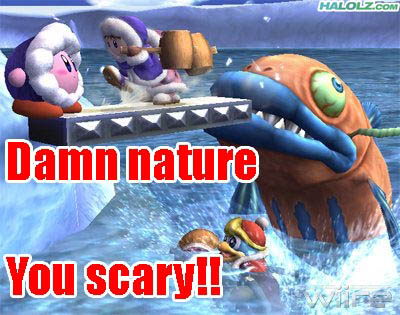

For me Doom 3 is a pretty scary game. It uses shadows, music and moment of surprise to scare you. I really liked how they used children as demons. You know, something considered innocent and all. Add some gore. Here you’ve got it. Makes you afraid to move forward, enter next room…
Using realistic elements of fear. The only game that achieves this is Amnesia. It looks like the developers of that game studied psychology. They used so many real life symptoms of fear that it is impossible not to think about it being a game. I am not talking about “BOOH I am a scary ghost/monster” moments. The right use of audio and video is the key element to make really scary games where the fear does continue over several minutes.
Also this:https://www.youtube.com/watch?v=loSzpvq73FY
I only get scared when the audio is corrupted and makes those screeching noises.
not knowing if or if not there will be something trying to kill you when you look around the corner. Stalker mastered that quite nicely. And of course being chased, but only if the game forces you, like the antlion, you can´t kill it, so you gotta run. Other, less commonly known example: Jedi Knight: Jedi Academy where you have to run or jump from platform to platform so the sand-worms won´t kill you. I played it with uhhhm 12(±2) and found that pretty scary. As I played it again with 16 I found it relativly simple to, you know, avoid being eaten.
I find it harder to get scared when there are other people around, whether these are npcs or say it was co-op. Like in Nightmare House 2 when you meet up with the soldiers I was still scared at parts but having other normal people around made me feel safer and that took away some fear.
u got ninjad Jean =(
And Amnesia really pulled it off well. I was always in anticipation of a monster around the corner, when there really weren’t any. If you let yourself get immersed in the game, it’s really, really scary.
atmosphere. story. intelligent antagonist(s) with believable motive. hearing your soon-to-be attacker first. enemies that move quickly.
what doesn’t work at all IMO: gimmicky ghosts and sudden images like in FEAR 2. the whole game is basically just one those .gif images
As a man with Silent Hill 2 posted on his signature, I am obliged to say my part.
I think the scariest moment in a game is when you read a notebook or something that implies that there has been something following you. Because from that moment in the game on, you always look over your shoulder.
Like in Resident Evil 3 when you learn that Nemesis is hunting you. He can even follow you into the safe/save room.
Or in Clock Tower 3 when the hammer jack man is somewhere in the city trying to find you.
But by far the scariest game I have ever played is Penumbra Black Plauge. Most espically the part when make a loud noise and you hear the infested man outside the door saying, " what was that!? ". Then you know you have to hide… Hiding is also very scary.
SILENT HILL 2
Have you ever played Amnesia? Made by the creators of Penumbra. Playing it again just cause this thread. So scary.
I pretty much agree with crypt… Amnesia got my heart racing… I’d never play it by myself its just not fun its too scary…  Also yeah strange noises
Also yeah strange noises
There are 3 kinds of horror games:
- The kind that have you be walking around in a dark room when and enemy bashes into the room through something like a vent or hole in wall. Ex. Doom
- The kind that has you in an pitch black room that keeps you anctious because you know you will see the mosnter but not yet and so you keep thinking you will see it soon even though you don’t. Ex. Amnesia
 ark Decsent
ark Decsent - The kind where you walk in a brghtly light room with an enemy making tons of noise and slowly approaching you and dying almost instantly. Ex. Dead Space 2
Amnesia is the best horror game because of the constant play on emotions it gives you
One of the times that I got really freaked out was in Bioshock. It was in the medical pavilion, the room where the fog comes down a few times. First time there was fog, a body popped up on an examination table. I didn’t freak, but it did get me psyched up for something to happen. Then I noticed a tonic on the desk in the corner. I pick it up, more fog comes down. I turned around the leave the room, and a fucking splicer was right there in my face. It was the one and only time I ever really freaked out because of a video game.
Many things, but more than anything else, the Story, like Shadow of the Comet for example
Yeah, not as scary considering the monster only comes when you do an objective – but the monster is scary as [COLOR=‘Red’]FUCK[/SIZE]
Stole from Zero Puncuation.
While the reaction in that video is exactly what happens when you play Amneisa, that’s still pretty damn funny. That game did horror so well that it got to a point where I couldn’t play alone; ended up having to get a buddy to play at the same time while talking over Skype. I was fine with going into areas first, opening doors etc, but he handled the moster encounters so much better than I. Definitely wouldn’t of beaten that game alone.
There was also a bit in Bioshock that instilled a bit of fear in me: when you’d be wandering into a room and you’d see a shadow on the wall of someone, the lights would flicker and then the shadow was gone. But when you rounded the corner, there wouldn’t be anyone there.
But yeah, situations where you’re helpless in a dark or dangerous place pretty much do it for me.
I really need to beef my computer up soon so I can play Amnesia…need a game to scare me since Condemned.
A game where enemies don’t just pop out at you or where you see them go one way, avoid going that way then suddenly ENEMIES EVERYWHERE.
That and old towns seem to be scarier than cities.

A game where you can’t see anything because of fog, where the controls are horribly difficult, where your only weapon is a plank of wood and where some fast human-like creatures run out from under cars. Yep, Silent Hill.
Funny a dude from Silent Hill 4: The room called Henry too.